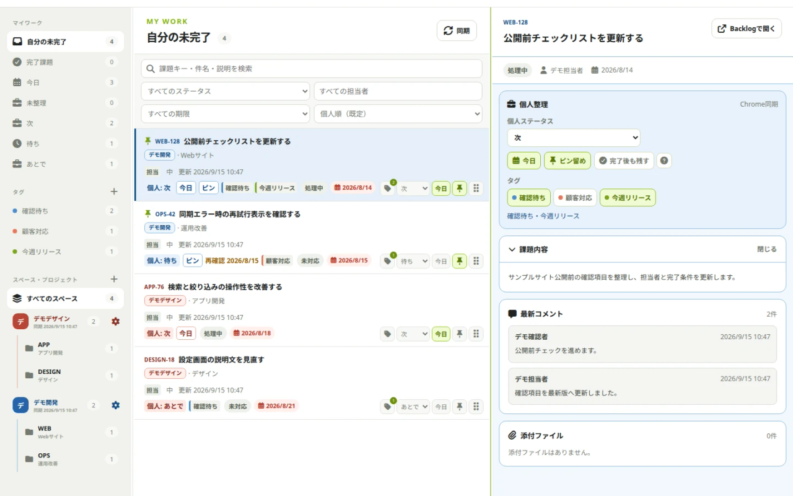

先に結論： スペース数が少なく確認頻度も低いなら、ブックマークやブラウザタブでも運用できます。一方、毎日複数スペースを確認し、優先順位を横断して決めたい場合は、Backlog APIを使って閲覧情報を一か所に集める方法が向いています。
01 / THE PROBLEM
複数スペースの管理は、なぜ難しくなるのか
制作会社や受託開発会社では、顧客ごとに別のBacklogスペースへ招待されることがあります。複数部門や子会社を支援するPM・PMOでも同じ状況が起こります。
スペースが分かれていること自体は、権限や情報管理の面で自然です。難しさは、利用者自身の「今日どれから対応するか」という判断がスペースをまたぐ点にあります。
- 各スペースを順番に開かなければ、担当課題の全体像が分からない
- 通知や期限の基準がスペースごとに異なり、優先度を比べにくい
- 確認済みの課題と、あとで対応する課題の区別を自分用に残しにくい
- 別のメモへ転記すると、Backlog側の更新と内容がずれやすい
02 / OPTIONS
複数スペースを管理する4つの方法
1. ブックマークや固定タブで順番に確認する
最も手軽な方法です。担当課題やウォッチ中の課題へのURLをスペースごとに保存し、決まった時間に巡回します。2〜3スペースを低い頻度で確認するなら、特別なツールを増やさず運用できます。
ただし、スペースを越えた期限順の比較や検索はできないため、数が増えるほど確認漏れが起きやすくなります。
2. 個人用のメモや表へ転記する
今日やることだけをメモ、スプレッドシート、別のタスク管理ツールへ書き出す方法です。自由に並べ替えられる一方、課題の件名・期限・ステータスが変わるたびに更新が必要です。
課題本文や顧客名などの情報を転記する場合は、勤務先や取引先の情報管理ルールも確認しましょう。
3. 通知をメールやチャットへ集約する
更新の把握には有効ですが、通知がない担当課題や長期間動いていない課題は見えにくくなります。通知の集約と、課題一覧の横断管理は別の目的として考える必要があります。
4. Backlog APIを使って一覧化する
Backlog公式の課題一覧取得APIでは、参加プロジェクトの課題を条件で絞り込んで取得できます。
各スペースのBacklog APIから、自分が閲覧できる課題を取得し、一つの画面で表示する方法です。スペースを越えた検索や期限順の確認がしやすくなり、元のBacklog運用を変更する必要もありません。
自作する場合は、APIキーの保存方法、アクセス権限、キャッシュ、APIの呼び出し回数、退職・異動時の接続解除まで設計します。外部ツールを使う場合も、同じ点を確認してください。
| 方法 | 手軽さ | 横断検索 | 情報の同期 | 向いている状況 |
|---|---|---|---|---|
| ブックマーク・固定タブ | 高い | できない | Backlogを直接確認 | スペース数が少ない |
| 個人メモ・表 | 中 | 転記分のみ | 手動更新 | 短いリストだけ管理 |
| 通知の集約 | 中 | 通知内のみ | 更新時 | 変化の把握が中心 |
| APIによる一覧化 | 準備が必要 | できる | 再取得で更新 | 日常的に複数スペースを使う |
03 / WORKFLOW
見落としを減らすための運用
どの方法を選んでも、確認するタイミングと判断基準を決めておくことが重要です。
- 1朝に全スペースの担当課題を確認する
期限切れ、今日が期限、未読の更新がある課題を先に見ます。
- 2今日対応する課題を絞る
すべてを別ツールへ複製せず、その日に判断が必要なものだけを選びます。
- 3待ち状態を区別する
自分の作業待ちと、顧客・チームからの返信待ちを分けると再確認しやすくなります。
- 4終業前にBacklogの状態を確認する
個人の整理だけで完結させず、チームに必要な更新は元の課題へ反映します。
個人用の分類は、チームのステータスとは役割が異なります。「今日」「次」「待ち」のような少数の分類に留めると、整理そのものに時間を使いすぎません。
04 / SECURITY
APIキーと課題データを安全に扱うポイント
APIを利用する方法では、利便性だけでなく保存先と通信先を確認します。
- APIキーを平文のファイル、共有メモ、ソースコードへ保存しない
- 利用者が許可したBacklogスペースだけへ通信する
- 取得した課題データをどこに保存するか確認する
- アクセス解析やエラー監視など、Backlog以外の送信先を確認する
- 不要になったスペースの接続情報とキャッシュを削除できるようにする
特に業務用スペースでは、所属組織や取引先の規程が優先されます。外部ツールの利用可否が分からない場合は、管理者へ確認してください。
05 / ISSUEDOCK
IssueDockで複数スペースを一つの画面へ
IssueDockは、複数のBacklogスペースに散らばる課題を横断して表示・検索し、自分用の「今日・次・待ち」やタグで整理するChrome拡張です。
Backlog側の課題やチームの運用ルールは変更しません。課題キャッシュはChrome拡張のIndexedDBへ、個人整理データはChrome Storageへ保存し、課題・APIキー・個人整理データをIssueDock運営者のサーバーへ送信しない設計です。

ONE PERSONAL WORKSPACE
散らばる課題を、ひとつの場所へ。
機能とデータの取り扱いを確認して、IssueDockが自分の運用に合うか確かめてください。
IssueDockは株式会社ヌーラボの公式製品ではなく、同社との提携・承認・推奨を示すものではありません。Backlogは株式会社ヌーラボの商標または登録商標です。